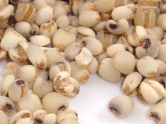

- 沈丕安提示：
- 我们可以当粮食吃的薏米仁可以抗病毒，每天吃一碗薏米仁粥可以消痘痘。秦皮汤是个清热解毒药，有一点苦，土茯苓30克，它跟30克薏米仁一起使用，再放点甘草，一起烧汤吃，吃一段时间以后，他的痘痘就少了，逐渐逐渐消掉了，但是要一个过程。如果痒的话就加30克地肤子。
- 主药介绍：
- 【别名】薏苡仁、苡仁、薏米仁、苡米仁、米仁、生米仁、炒米仁、熟米仁。 【来源】 为禾本科植物薏苡的种仁。 【性味与功效】 味甘、淡，性凉。利水渗湿，清热排脓，健脾止泻，除痹消肿。 【传统应用】 主治小便短赤，水肿脚气；发热，肺痈、肠痈；脾虚湿困泄泻；风湿曾痛，筋脉拘挛等病症。 【传统方剂】 1、三仁汤《温病条辨》：薏苡仁、白蔻仁、杏仁、竹叶、通草、滑石、半夏、厚朴，治疗湿温初起，身热恶寒，身疼胸闷。 2、薏苡附子败酱散《金匮要略》：薏苡仁、附子、败酱草，治疗肠痈。 3、薏苡仁酒《本草纲目》：生薏苡仁粉，同曲酿酒或煮酒饮服，去风湿，强筋骨，健脾胃。
- 【临床体会】 1、 薏米仁治疗痤疮等病症。 薏苡仁煮粥煮汤长期内服可治疗扁平疣、软疣和痤疮。 薏苡仁降糖、降压都是比较弱的，可以在复方中使用，以协助增效。 薏苡仁古代治疗肺痈、肠痈，这些体内化脓性感染疾病，在古代是先进的方法。而现代在城市里都用其他的方法治疗，中医可能起一些辅助和康复作用。

薏米仁
薏米仁